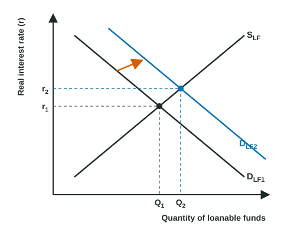

Every dollar someone saves can become a dollar someone else borrows. The loanable funds market pulls all of that saving and borrowing into one supply and demand graph. It is the last graph of Unit 4, and the one that answers questions about government borrowing, saving and the real interest rate.
The market for loanable funds
The loanable funds market is where savers supply funds and borrowers demand them, through banks, bond markets and other lenders. Its price is the real interest rate, because both sides care about buying power: a saver wants to be paid more than inflation takes away, and a firm compares its borrowing cost with what an investment will earn after inflation.
- Supply of loanable funds (SLF) comes from saving. It slopes up: a higher real interest rate rewards saving, so people save and lend more.
- Demand for loanable funds (DLF) comes from borrowers: firms that want to invest in equipment and buildings, households that borrow, and a government that spends more than it collects in taxes. It slopes down: at a lower real rate, more investment projects pay off.
Label the graph exactly: vertical axis "Real interest rate (r)", horizontal axis "Quantity of loanable funds", curves DLF and SLF. Writing "nominal" on this graph, or "real" on the money market, loses the graph point.
National saving
Saving comes from two places. Private saving is what households and firms save. Public saving is the government's tax revenue minus its spending (including transfer payments). When the government spends more than it collects, public saving is negative and the government borrows the difference.
Worked example: national saving. In an invented country, private saving is $400 billion, tax revenue is $900 billion and government spending is $1,000 billion.
- Public saving = tax revenue - government spending = 900 - 1,000 = -100 billion. The government must borrow $100 billion.
- National saving = 400 + (-100) = 300 billion.
- In the market: the government's $100 billion of borrowing adds to the demand for loanable funds.
The method: subtract spending from revenue (keep the sign), then add private saving.
What shifts the curves
| Shifts demand (DLF) | Shifts supply (SLF) |
|---|---|
| Government borrowing rises: right | Households save a larger share of income: right |
| Firms expect higher returns on investment (new technology, optimism, a tax credit for investment): right | Incentives to save, such as tax breaks on interest earned: right |
| Firms grow pessimistic about profits: left | Households save less, as when they feel richer: left |
A change in the real interest rate itself is a movement along both curves, not a shift.
Government borrowing and private investment

Worked example: drawing more government borrowing. The government increases its spending without raising taxes and borrows to cover the difference.
- Draw and label: real interest rate (r) and quantity of loanable funds; DLF1 down, SLF up; mark r1 and Q1.
- Which curve moves: the government is borrowing more, so the demand for loanable funds shifts right to DLF2. Draw an arrow.
- New equilibrium: r2 is above r1, and the total quantity of loanable funds rises from Q1 to Q2, as savers lend more at the higher rate.
- Private investment: at the higher real rate, firms borrow less. The government takes a larger share of the funds, so the quantity of private investment falls.
The method: decide whether the change is saving (supply) or borrowing (demand), shift that curve, then compare the real rate before and after and say what happens to private investment.
You may also see the same event drawn as a leftward shift of supply, because negative public saving lowers national saving. Both pictures raise the real interest rate. Use the demand shift unless a question tells you otherwise, and say which you drew.
A common slip is to say more government borrowing lowers the real interest rate because "more money is lent." More is lent in total, but only because the real rate rose. The rate goes up, and private investment goes down.
For your exam
- Saving is supply; borrowing (including government borrowing) is demand.
- Government borrowing up: DLF right, real interest rate up, private investment down.
- Private saving up: SLF right, real interest rate down, investment up.